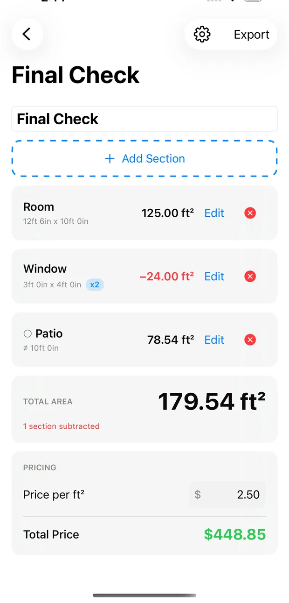
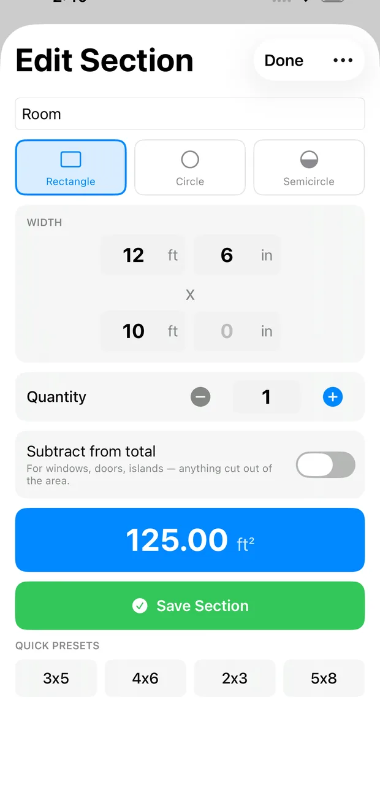
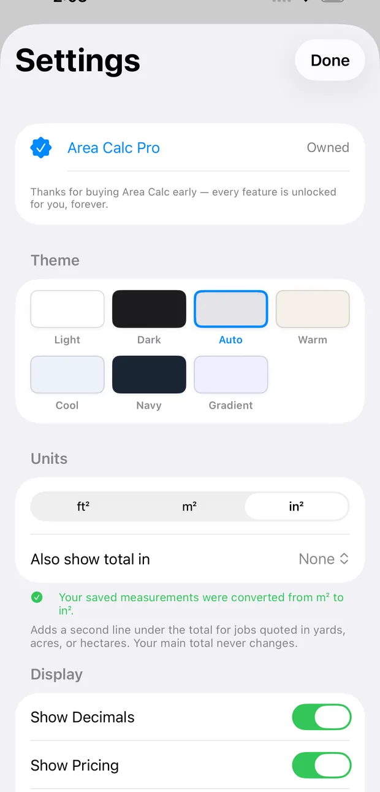

Measure it. Subtract it.
Price it.
Add every area of the job, take out the windows and islands, and turn the total into a quote — in ft², m² or in².

Free to use · iPhone & iPad · No account needed

Built for real jobs
Rooms are rarely one clean rectangle. AreaCalc Pro handles the ones that aren't.
As many areas as the job needs
Add a section per room, wall or bay, name each one, and watch the running total update as you go.
Subtract the cut-outs
Mark a window, door, island or fire pit as a subtraction and it comes straight off the total.
Circles and semicircles
Round patios, planters and bays take a single diameter — no working out π by hand.
Feet, metres or inches
Switch units whenever you like. Your saved measurements convert with you, and so does your rate.
Turn area into a quote
Enter your price per unit and get the job total instantly — no separate calculator.
Send it to the client
Export a CSV breakdown with every section, what was subtracted, and the final total.
Add, subtract, and see the total move
Every section is listed with its own dimensions and area. Subtractions show in red with a minus, so a client can read exactly how you got to the number.
- Name each section — Living Room, Hallway, Kitchen
- Quantity multiplier for repeated areas like windows
- A warning if your subtractions exceed the areas added
- Optional second readout in yd², acres or hectares
Pick a shape, type the size, done
Rectangle, circle or semicircle. Enter feet and inches — or metres and centimetres — and the area appears as you type.
- Quick presets for common sizes
- Tap the total to flip between in² and ft²
- Decimal entry that works in every language

Your units, your way
Work in square feet, square metres or square inches. Change your mind halfway through a job and every saved measurement converts — your quote stays exactly the same.
- ft², m² and in²
- A second line in yd², acres or hectares for land jobs
- Set a default rate once and every new project uses it

No account. No sign-up. No analytics. Projects are saved on your device, and nothing you measure is sent anywhere. Read the privacy policy — it is short.
Start measuring
Free to use, with an optional Pro upgrade for pricing, exports and round shapes.